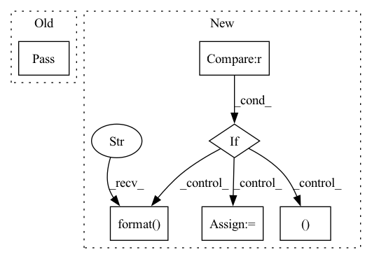

Pattern ID :31277
Before Change
train_loss += loss
if metrics:
pass
// metrics.update(output, y_batch)
// train_acc += metrics.result()
// metrics.reset()
else:After Change
if test_dataset:
// use training and evaluation sets to evaluate the model every print_freq epoch
if epoch + 1 == 1 or (epoch + 1) % print_freq == 0 :
network.set_eval()
val_loss, val_acc, n_iter = 0, 0, 0
for X_batch, y_batch in test_dataset:
_logits = network(X_batch) // is_train=False, disable dropout
val_loss += loss_fn(_logits, y_batch, name="eval_loss")
if metrics:
metrics.update(_logits, y_batch)
val_acc += metrics.result()
metrics.reset()
else:
val_acc += (_logits.argmax(1) == y_batch).type(torch.float).sum().item()
n_iter += 1
print(" val loss: {}".format(val_loss / n_iter))
print(" val acc: {}".format( val_acc / n_iter) )
class WithGrad(object):In pattern: SUPERPATTERN
Frequency: 3
Non-data size: 6
Instances Fragment ID: 91679542
Project Name: tensorlayer/tensorlayerx
Commit Name: 5a055c7e44c1c45757261cf1af36bbd6d37b80e0
Time: 2022-03-07
Author: laicheng_vip@163.com
File Name: tensorlayerx/model/core.py
M Class Name: Model
N Class Name: Model
M Method Name: th_train(11)
N Method Name: th_train(11)
M Parent Class:
N Parent Class:
M File Name: tensorlayerx/model/core.py
N File Name: tensorlayerx/model/core.py
M Start Line: 439
M End Line: 439
N Start Line: 431
N End Line: 481
Before Change
if p.checkmode: // just report which bitstreams exist in the cache
if bpp == 0:
pass
else:
check_c += 1
print(check_c, "/", sample.id, "/", sample.open_images_id, "/", path)
continueAfter Change
tag = sample.open_images_id // TODO: if there is no open_images_id, then use the normal id?
// print(tag)
bpp, im = enc_dec.BGR(im0, tag=tag)
if bpp < 0 :
if p.check:
print("Bitstream missing for image id={id}, openImageId={tag}, path={path}". format(
id=sample.id, tag=tag, path=path))
continue
// enc_dec.BGR tried to use the existing bitstream file but failed to decode it
print("Corrupt data for image id={id}, openImageId={tag}, path={path}". format(
id=sample.id, tag=tag, path=path) )
// .. the bitstream has been removed
print("Trying to regenerate")
// let"s try to generate it again
bpp, im = enc_dec.BGR(im0, tag=tag)
if bpp < 0:
print("DEFINITELY Corrupt data for image id={id}, openImageId={tag}, path={path} --> CHECK MANUALLY!". format(
id=sample.id, tag=tag, path=path)) Fragment ID: 91679550
Project Name: interdigitalinc/compressai-vision
Commit Name: faddf7c84fed3094f05adec6084d4fccc131da55
Time: 2022-09-16
Author: sampsa.riikonen@iki.fi
File Name: compressai_vision/cli/vtm.py
M Class Name: AnonimousClass
N Class Name: AnonimousClass
M Method Name: main(1)
N Method Name: main(1)
M Parent Class:
N Parent Class:
M File Name: compressai_vision/cli/vtm.py
N File Name: compressai_vision/cli/vtm.py
M Start Line: 155
M End Line: 197
N Start Line: 155
N End Line: 203
Before Change
// TODO
def _remap_ID_seq(self, source, field):
pass
def __getitem__(self, index):
df = self.inter_feat.loc[index]
// TODO join user/itemAfter Change
self.field2id_token[field] = mp
def _remap_ID_seq(self, source, field):
if source in ["inter", "user", "item"] :
feat_name = "{}_feat".format( source)
df = getattr(self, feat_name)
split_point = np.cumsum(df[field].agg(len))[:-1]
new_ids, mp = pd.factorize(df[field].agg(np.concatenate))
new_ids = np.split(new_ids, split_point)
df[field] = new_ids
self.field2id_token[field] = mp
def get_token_num(self, field):
if field not in self.field2type: Fragment ID: 91679560
Project Name: rucaibox/recbole
Commit Name: 17c3b1d7b15f95266ecbf72fdc1eff70c476c2fa
Time: 2020-07-19
Author: 297086016@qq.com
File Name: data/dataset.py
M Class Name: Dataset
N Class Name: Dataset
M Method Name: _remap_ID_seq(3)
N Method Name: _remap_ID_seq(3)
M Parent Class: object
N Parent Class: object
M File Name: data/dataset.py
N File Name: data/dataset.py
M Start Line: 144
M End Line: 144
N Start Line: 146
N End Line: 155